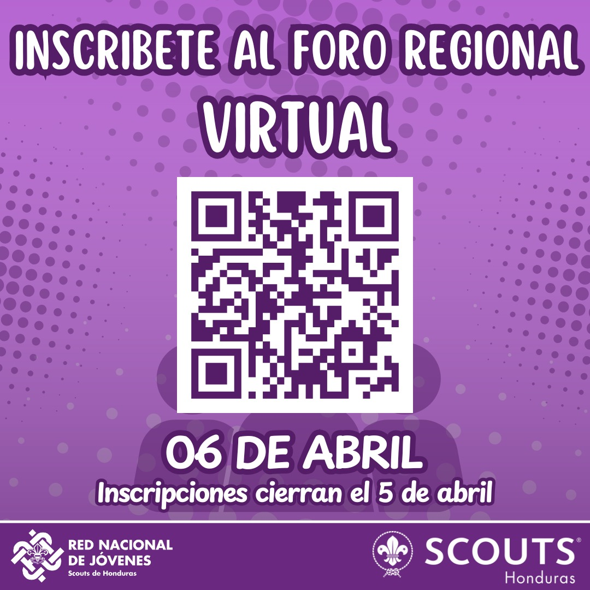
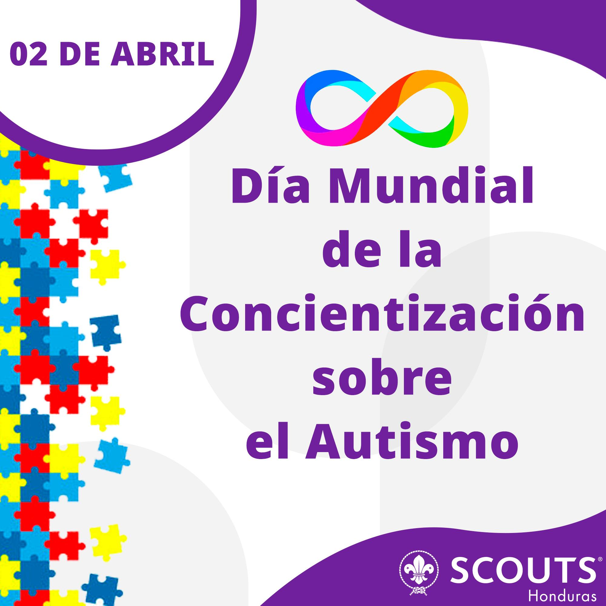
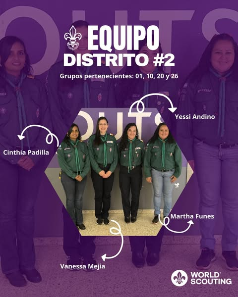
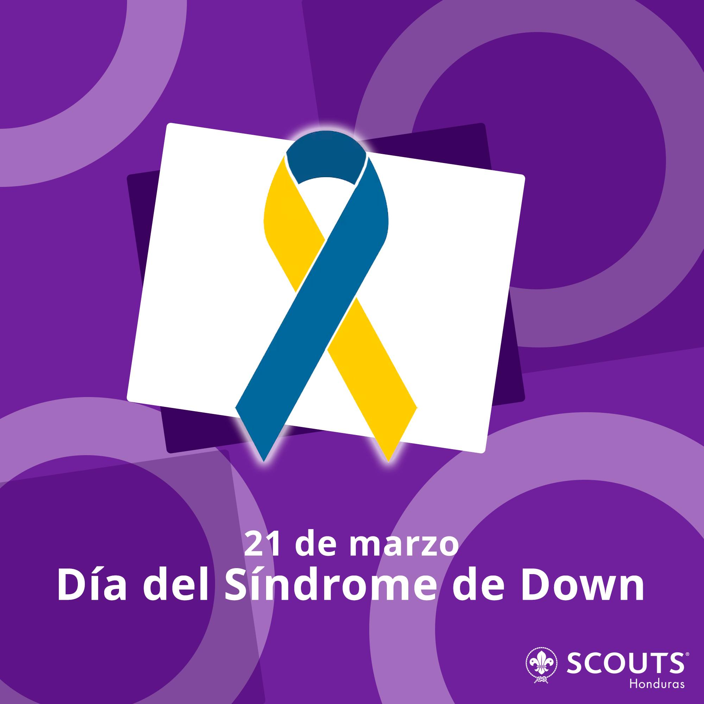

¡Acércate y comparte con nosotros en nuestros siguientes eventos!
domingo, 6 de abril del 2025
Foro Regional Virtual
🌍 ¡Participa en los Foro Regionales! 🌍
🗓 Fecha: 6 de abril
💻 Modalidad: Virtual
🎯 Un espacio para compartir ideas, fortalecer la comunidad y construir el futuro del escultismo en nuestra región!
No te pierdas esta oportunidad de ser parte del cambio y aportar tu voz en este encuentro único. ¡Juntos hacemos la diferencia!
🔗 Inscríbete ahora y únete a la conversación.

viernes, 4 de abril del 2025
Buenas Acciones!
Este 4 de abril, celebremos juntos el Día de las Buenas Acciones! 🌟
Te invitamos a un Zoom especial a las 8:00 p.m. para compartir ideas, inspirarnos y aprender cómo pequeñas acciones pueden transformar el día a día de todos. 🤝✨
¡No faltes! Juntos podemos hacer el bien, siempre.

miércoles, 2 de abril del 2025
El Autismo.
En el movimiento Scout, valoramos la diversidad y la inclusión. En este día especial, recordamos la importancia de construir un mundo más comprensivo, donde cada persona pueda brillar con su propia luz.
Seamos agentes de cambio, promoviendo la empatía y el respeto en nuestra comunidad. ¡Unidos, hacemos la diferencia!

sábado, 30 de marzo del 2025
Animación Territorial!
El pasado domingo 30 de marzo, la “Comisión Nacional de Animación Territorial” de la BANSH reunió a representantes distritales a nivel nacional en la oficina Scout de Tegucigalpa en un espacio de formación y fortalecimiento del Escultismo. 🌍🔥

viernes, 21 de marzo del 2025
Síndrome de Down
En el escultismo, celebramos la diversidad, la inclusión y el respeto por cada persona. Hoy, en el Día Mundial del Síndrome de Down, recordamos que cada individuo tiene un talento único que aportar al mundo.
Como Scouts, nos esforzamos por construir un mundo más justo y solidario, donde todos tengan la oportunidad de brillar.
